飼い主マイページ 使い方ガイド
← ガイド一覧へ
受付・トリマー・看護師・獣医師向け ｜ 2026年9月30日版 ｜ 荻窪ツイン動物病院
30秒まとめ
- 飼い主さまが公式LINEの「マイページ」で、予約・診察の履歴・健康手帳・写真・先生からのお渡し・ポイントを見られます。
- スタッフがすることは3つだけ：①トリミング・ホテルの写真と日報を送る（予約表）／②先生が画像や検査結果を送る（画像ビューア）／③ポイントの特典を「使った」にする（予約表の「⋯」）。
- 体重・ワクチン・フィラリア・健診・診察の履歴は、カルテから自動で出ます（その日の分は翌朝）。
- 写真は送る前に、ほかの子や人が写っていないかを必ず確かめてください。
1. アプリを開く
飼い主さま：公式LINEのメニュー → 「マイページ」。はじめての方は、診察券番号とペットのお誕生日でLINE連携をしてから使えます。ご家族それぞれのLINEでも連携できます。
スタッフ・先生：マイページそのものは開きません。操作はいつもの予約表（予約管理のガイド）と、診察室の画像ビューア（画像ビューアのガイド）の中で行います。
2. 全体の流れ
だれが何をすると、飼い主さまに何が届くか
| スタッフ・先生の操作 | 飼い主さまのマイページ |
|---|
| 予約表でトリミング・ホテルの写真を送る | 「アルバム」に並ぶ。ホテル中は「ホーム」のいまお預かり中にも出る |
| 予約表でホテルの日報を書く | その日のうちに「アルバム」と「いまお預かり中」に出る |
| 画像ビューアで「📱 飼い主さんに送る」 | 「お渡し」に画像・検査結果・先生のひとこと。LINEにお知らせが届く（夜は翌朝9時） |
| （何もしなくてよい） | 「手帳」＝体重・ワクチン・フィラリア・健診／「履歴」＝来院日と内容。カルテから自動（翌朝） |
| お会計（何もしなくてよい） | 「ポイント」＝対象の合計（税込）1000円につき1ポイント、翌朝に自動でつく ※始める日が決まってから |
| 予約表「⋯」→「🎁 ポイント」で「使った」 | 特典が「使用済み」になる |
飼い主さまの画面の全体像
下のタブ：ホーム／手帳／お渡し／アルバム／ポイント／履歴。
手術・避妊去勢・歯科処置の来院は、履歴には出しません（院長の決まり）。先生が画像ビューアから自分で選んで送った物だけは「お渡し」に出ます。
3. トリミング・ホテルの写真と日報を送る（予約表）
- 予約表でトリミングかホテルの予約を押して、詳細を開きます。
- 「📷 飼い主さんのマイページへ」の欄の 写真を撮る・選ぶ を押します。iPhone ならその場で撮るか、写真ライブラリから選べます（何枚でも）。
- 送った写真は欄に並びます。まちがえたら右上の × で飼い主さまのマイページから外せます。
- ホテルの予約では同じ欄に日報（ごはん・うんち・おしっこ・ようす）があります。日付を選んで書き、日報を保存。
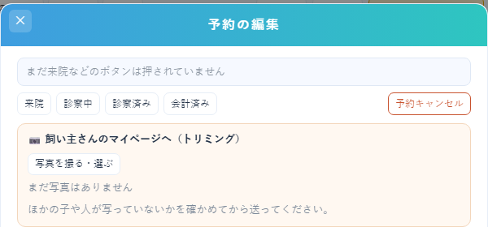
予約の詳細画面の上の方に出ます（写真は見本の予約）
送る前に、ほかの子・ほかの飼い主さま・スタッフの顔などが写っていないかを必ず確かめてください。
診察券番号（枝番つき）が入っていない予約では送れません（欄にそう出ます）。
4. 先生からのお渡しを送る（画像ビューア・獣医師）
- 画像ビューアでその子を開き、上のボタンの 📀 CD書き出し を押します（CDに焼くときと同じ □ で選ぶ画面になります）。
- 上の一列のサムネの □ で、送るレントゲン・エコー・歯の写真を選びます（日付の下の □ でその日を全部）。
- 帯の 📱 飼い主さんに送る を押すと確認画面が出ます。その日の検査値（血液・尿の分類ごと）に☑、先生のひとこと（任意）を書いて この内容で送る。
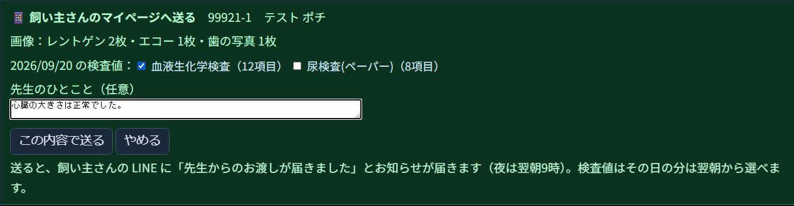
確認画面（見本の子）
検査値はカルテの写し（毎朝8時）から読みます。その日の検査値は翌朝から選べます。画像だけ先に送り、検査値は翌日に送る、でも大丈夫です。
エコーの動画は1コマ目の静止画になります。画像は自動で小さくしてから送ります。
5. ポイントカード（受付）
サプリメント・フード・トリミング・ホテル・ケア用品などのお会計の合計（税込）1000円につき1ポイント。お会計が済むと翌朝に自動でつきます。有効期限はありません。10ポイントごとに特典（10＝歯みがき、20＝肉球ケア、30＝シルクパック、40＝マイクロバブルバス、または500円割引）。
いまは「準備中」です。領収項目の整理が済んで始める日が決まるまで、ポイントは自動ではつきません（マイページにも「準備中」と出ます）。それまでは今のLINEのショップカードを使ってください。
- 予約表の ⋯ → 🎁 ポイント。診察券番号（枝番なしでよい）を入れて 見る。予約の詳細画面にも「🎁 ポイント 23 使える特典 1つ」と出て、ポイントを開く で同じ画面になります。
- 特典を使ったら：その特典の 使った。ポイントは減りません（スタンプ式）。
- LINEのショップカードからの引き継ぎ：飼い主さまのショップカードのスタンプの数を見て、「ショップカードからの引き継ぎ」に入れて 入れる（お家ごとに1回）。
- まちがえた記録は、履歴の 取消 で取り消せます。
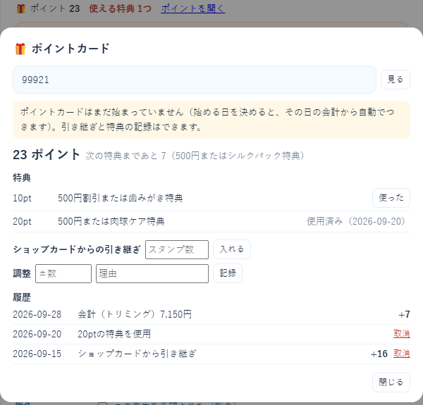
ポイントカードの小窓（見本のお家）
6. 飼い主さまのマイページでできること
飼い主さまに聞かれたときのために、画面を載せておきます（名前・写真・数値はすべて見本です）。
ホーム・お預かり中
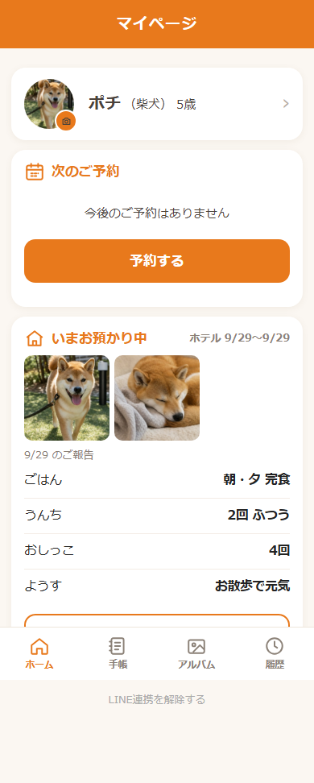
プロフィール（丸を押すと写真を撮る・選ぶ）・次のご予約・いまお預かり中
健康手帳・フィラリア予防の日のお知らせ
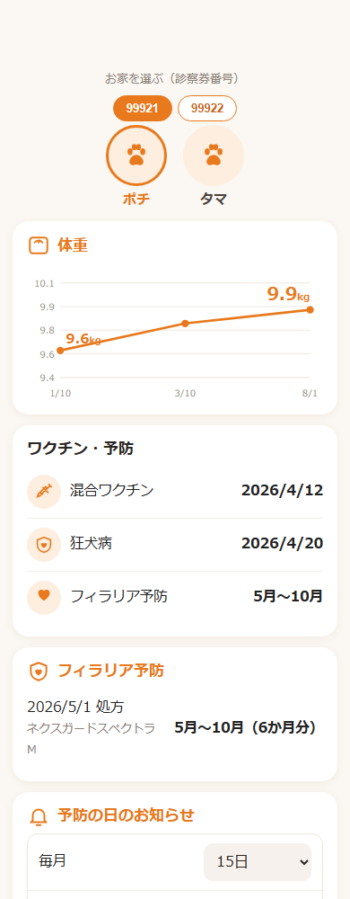
体重のグラフ・ワクチン・フィラリア
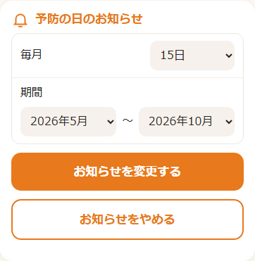
決めた日にLINEでお知らせ。あげた月にチェック
先生からのお渡し
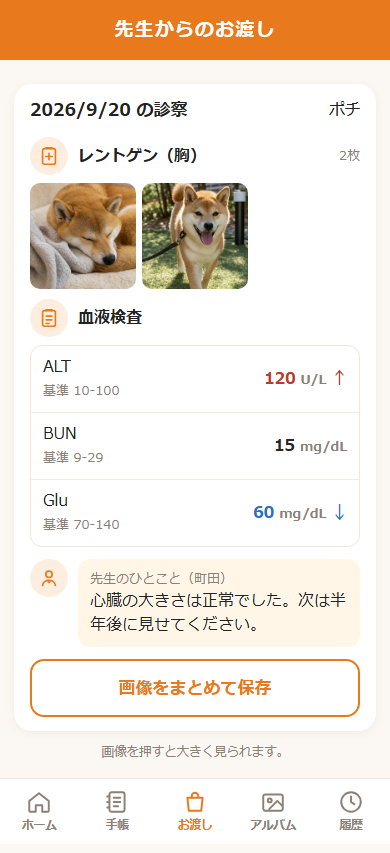
画像・検査の表（高い↑・低い↓）・先生のひとこと
アルバム・紹介する
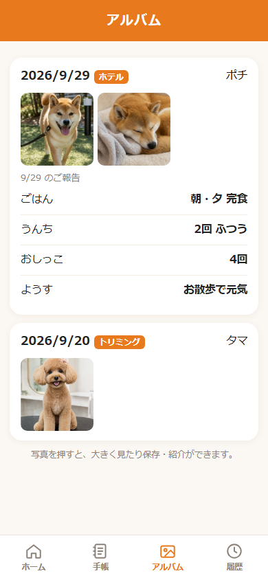
日付ごとの写真と日報
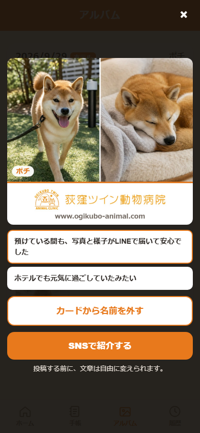
「紹介する」＝病院のロゴとURL入りのカードをSNSへ（トリミング・ホテルの写真だけ）
ポイント・履歴
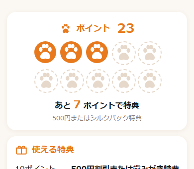
10ポイントごとに特典
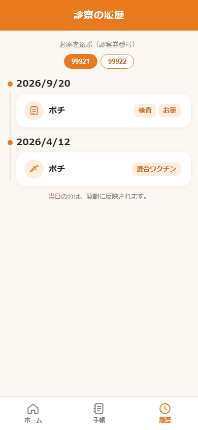
来院日と内容（手術系は出ない）
7. よくある質問・困ったとき
| こんなとき | こうする |
|---|
| 「マイページに今日の体重・検査が出ない」 | カルテの写しは毎朝8時です。翌朝に出ます。 |
| 「写真が届かない」 | その予約に診察券番号（枝番つき）が入っているか確かめてください。LINE連携がまだの方は、マイページを開けません（連携の案内を）。 |
| 「お渡しのLINEが来ない」 | 夜（21時〜翌9時）に送った分は翌朝9時に届きます。LINE連携がまだのお家には届きません。 |
| まちがった写真を送った | 予約の詳細の写真の × で外せます。お渡しをまちがえたときは院長へ。 |
| 「ポイントがつかない」 | いまは準備中です（始める日が決まってから自動でつきます）。始まってからは、お会計の翌朝につきます。 |
| 家族もマイページを見たい | ご家族それぞれのLINEで連携できます（同じ診察券番号でOK）。 |
| 亡くなった子の写真 | 亡くなってから1年間は見られます。 |